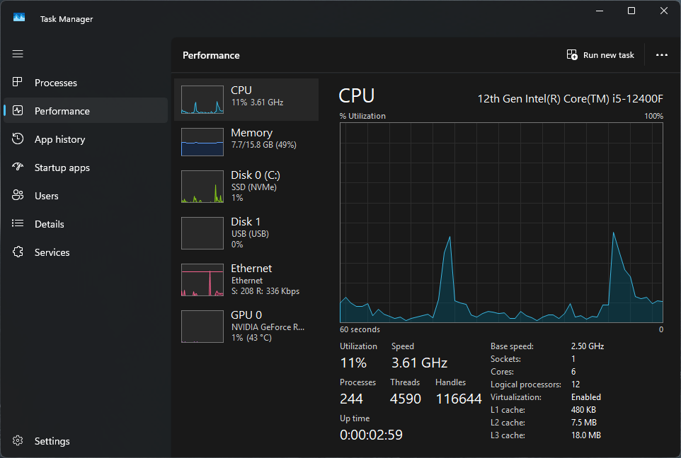
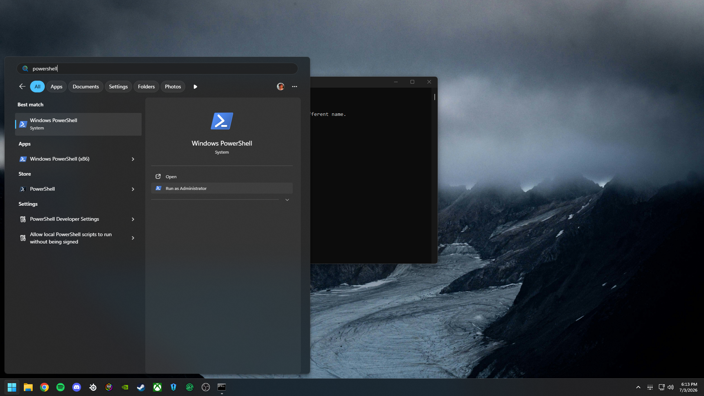
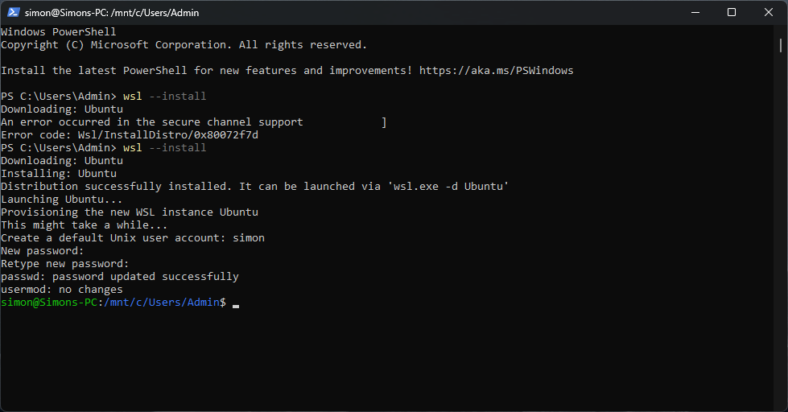
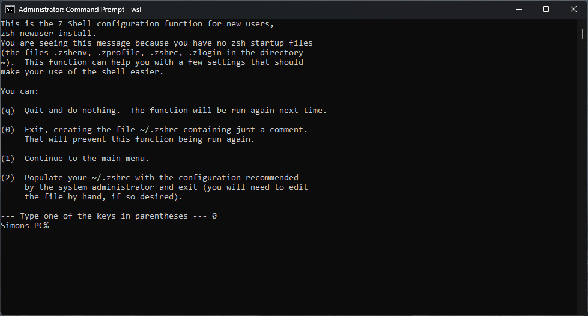
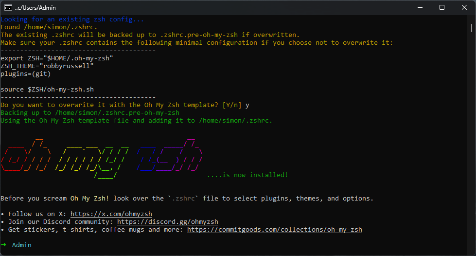
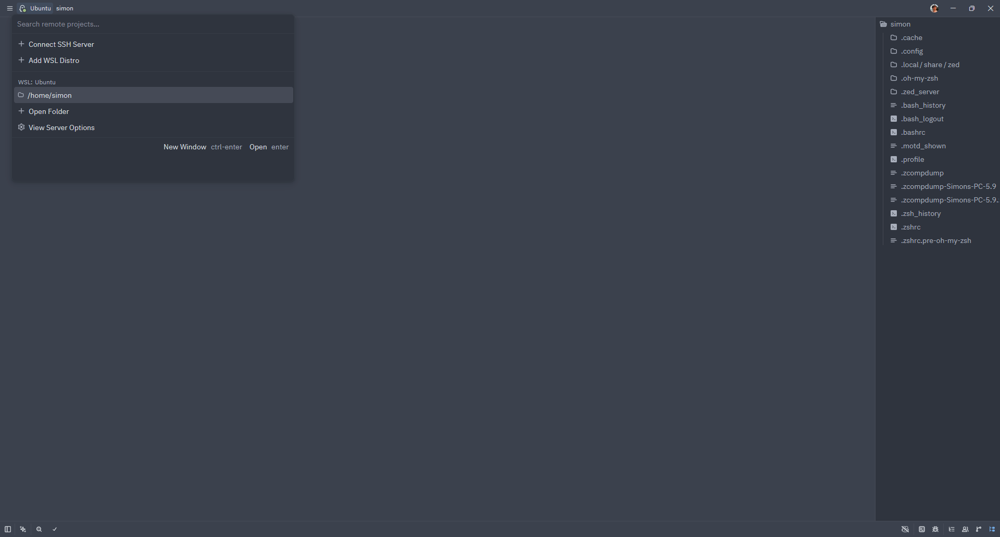

Xcode CLI tools give you git, compilers, and other command-line utilities that Homebrew and Oh My Zsh depend on. Installing them first avoids "command not found" errors later.
Rowdy Creators
Setup Guide
From a fresh laptop to a working dev environment: Zed, Zsh, and Oh My Zsh, on macOS or Windows.
Both paths lead to the same place: everything from "Zed is open" onward is shared.
Path 01
macOS
Five steps to a working terminal and editor on macOS, then continue to the shared In-Zed setup.
Reference: Zed installation docs
1
Install Xcode Command Line Tools
Open Terminal first: press Cmd+Space, type Terminal, and hit Enter (or find it in Applications → Utilities). Every command in this guide runs there.
These provide git, compilers, and other developer tools that macOS doesn't ship with. Installing them first avoids "command not found" errors later.
xcode-select --installWhy this comes first
2
Install Zed
There are two ways: Homebrew (recommended, keeps Zed updated with brew upgrade) or a direct download.
Recommended path: Homebrew
sh -c "$(curl -fsSL https://raw.githubusercontent.com/Homebrew/install/HEAD/install.sh)"Then visit brew.sh if you need more detail.
With Homebrew installed:
brew install --cask zedQuick path: direct download
Visit zed.dev/download, download the .dmg, open it, and drag Zed to Applications. Faster, but you update Zed manually.
3
Verify Zsh
macOS has used Zsh as the default shell since Catalina. Run echo $SHELL in your terminal; you should see /bin/zsh.
If it's not Zsh
chsh -s /bin/zshClose and reopen the terminal afterward.
4
Install Oh My Zsh
A framework that gives your prompt a cleaner theme, shows your current directory, and adds helpful plugins.
sh -c "$(curl -fsSL https://raw.githubusercontent.com/ohmyzsh/ohmyzsh/master/tools/install.sh)"Why Oh My Zsh
It replaces the bare shell prompt with a themed one, highlights the current directory and git branch, and lets you enable plugins (syntax highlighting, autosuggestions) later.
Screenshot: Oh My Zsh success screen
5
Open Zed
Launch Zed from Applications (or run zed in the terminal if Homebrew added it to your path).
You're set. Zed is open. Continue to the shared In-Zed Setup.
Path 02
Windows
Set up WSL, Zsh, and Oh My Zsh on Windows, then connect Zed to WSL and continue to the shared In-Zed setup.
Reference: Zed installation docs
0
Before You Start
Virtualization lets your computer run Linux inside Windows. Enabling it is safe and won't void your warranty.
First, make sure Windows is up to date: Settings → Windows Update. Then check virtualization is on: open Task Manager (Ctrl+Shift+Esc) → Performance tab → CPU → look for "Virtualization: Enabled." If it says Disabled, reboot into BIOS and enable it.

| Brand | BIOS Setup Key | Boot Menu Key |
|---|---|---|
| Dell | F2 | F12 |
| HP | Esc → F10 | Esc → F9 |
| Lenovo | F1 or F2 | F12 |
| ASUS | F2 (laptop) / Del (desktop) | Esc (laptop) / F8 (desktop) |
| Acer | F2 | F12 |
| Other | Del or F2 | F8, F11, or F12 |
What is virtualization, exactly?
WSL runs a real Linux kernel alongside Windows, and that needs CPU virtualization support turned on in BIOS. It's a one-time setting; you won't need to touch it again.
1
Install WSL
WSL gives you a real Ubuntu Linux environment inside Windows. This requires Windows 10 v2004+ or Windows 11.
Open PowerShell as Administrator: press the Start key, type powershell, then click "Run as Administrator" on the right.

wsl --installReboot when it finishes.
Why WSL
The club project and the tools in this guide run on Linux. WSL gives you a real Ubuntu shell and filesystem without dual-booting or a virtual machine GUI.
2
Ubuntu First Launch
After reboot, Ubuntu launches automatically (or open it from the Start menu). It asks you to create a Unix username and password. Choose any, and remember the password: you'll use it with sudo.

3
Update Ubuntu
Fresh Ubuntu is out of date. Bring it current.
sudo apt update && sudo apt upgrade -y
4
Install Git and Zsh
Oh My Zsh needs both of these.
sudo apt install git zsh -y
5
Change Your Shell to Zsh
Make Zsh the default shell for your Ubuntu user.
chsh -s $(which zsh)If chsh fails with "operation not permitted"
On WSL this error is common. Edit /etc/passwd directly with Nano, a simple editor with no Vim required.
sudo nano /etc/passwdFind the line that starts with your username (scroll with arrow keys). The last field on that line is the shell path; it's probably /bin/bash. Change it to /usr/bin/zsh.
Ctrl+W, then type your username →Enterto jump to your line- Use
→/←to move to/bin/bashand change it to/usr/bin/zsh Ctrl+O→Enterto saveCtrl+Xto exit
Close and reopen the terminal, then check echo $SHELL shows /usr/bin/zsh.
If that also fails, paste your error into an AI chat:
I'm on WSL Ubuntu trying to set my default shell to zsh.
`chsh -s $(which zsh)` failed with "operation not permitted", and manually editing /etc/passwd with Nano also failed.
Here are my error logs:
[paste the full error output here]
How do I set zsh as my default shell on WSL?Close the terminal, reopen it, and run wsl to get back into Ubuntu; the shell change takes effect on the next launch.
6
Skip the Zsh Setup Menu
The first time Zsh runs with no config file, it shows a setup menu asking how you'd like to configure it. Ignore it: the next step (Oh My Zsh) will write your .zshrc for you.
Press 0 to exit and create an empty config file, then continue.

7
Install Oh My Zsh
Same installer as macOS. It gives you a clearer prompt and directory display.
sh -c "$(curl -fsSL https://raw.githubusercontent.com/ohmyzsh/ohmyzsh/master/tools/install.sh)"
8
Install Zed on Windows
Visit zed.dev/download, download the Windows installer, and run it.
This is the Windows app
Don't try to install Zed from inside Ubuntu/WSL. You install the Windows app once, then connect it to WSL in the next step.
9
Connect via WSL Remote
Open Zed (the Windows app). To work on Linux files, connect Zed to your WSL distribution.
Critical: always open projects via WSL Remote
Never open files from the Windows filesystem (paths starting with /mnt/c/...). Cross-filesystem access is slow and breaks tools. Always open projects through the WSL Remote so they live in the Linux filesystem.
A fresh WSL terminal drops you in /mnt/c/Users/... (your Windows home). Move to your Linux home first: run cd ~.

10
Open Windows Terminal the Right Way
Type
wsl every timeEvery time you open Windows Terminal you start in PowerShell, a different shell with different commands. Type wsl to drop into Ubuntu before running anything from this guide.
wslOnce you're in WSL, run cd ~ to make sure you're in your Linux home directory, not the Windows filesystem. Everything you set up here lives on the Linux side.
11
You're in Zed via WSL Remote
You're connected to your WSL distribution from inside Zed. The terminal, the file tree, and every git command now run in Linux, exactly the same as macOS from here on out.
From here on, macOS and Windows are identical. Continue to the shared In-Zed Setup.
In Zed
In-Zed Setup
You're in Zed with a working Zsh shell. These steps are the same on macOS and Windows.
1
Clone the Example Project
You'll clone simonteague6/profile-card, a simple profile card that shows how commits and branches work together. It's the demo for the Zed tour, not the real club project.
Open Zed's built-in terminal: Ctrl+` (that's the backtick key, left of 1). Then run these one at a time:
mkdir -p ~/projectscd ~/projects && git clone https://github.com/simonteague6/profile-cardcd profile-card && zed .zed . opens the current directory in Zed's file tree. You'll see index.html, style.css, and README.md appear.
First time using git? Set your name and email
If you've never used git before, set your name and email so any commits you make later are attributed to you. These only need to be set once; git remembers them.
git config --global user.name "Your Name"git config --global user.email "your@email.com"Windows/WSL: always clone in the terminal
The command palette clone opens a Windows filesystem picker, which won't work with WSL. Always use the terminal on Windows. (On macOS, the command palette works fine if you prefer it.)
2
Verify Your Environment
Two quick checks confirm your shell and git are ready.
echo $SHELLExpect /bin/zsh on macOS, /usr/bin/zsh on WSL.
git statusShould run without "not found." Inside the cloned project it also shows branch info.
Screenshot: Terminal verification: echo $SHELL and git status
What these check
echo $SHELL confirms Zsh is your default shell. git status confirms git is installed and you're inside a repository.
Now take a quick tour of Zed → Zed UI Tour.
Tour
Zed UI Tour
A quick walk through Zed's features using the example project you just cloned. On Windows, this also confirms where your projects live on disk.
Zed's window is split into a few key areas. The file tree lives on the left; you'll see index.html, style.css, and README.md here. The editor takes up the center. At the very top, a bar shows your current branch and lets you switch between open projects. Everything else (terminal, git graph, agent panel) slides open from the bottom or side when you need it.
Command palette
Cmd+Shift+P (macOS) or Ctrl+Shift+P (Windows) opens the command palette, the fastest way to do anything in Zed. Search for "clone," "open folder," "toggle terminal," or any action. You can drive the entire editor from here without remembering shortcuts.
File picker
Cmd+P (macOS) or Ctrl+P (Windows) opens a fuzzy file finder. Type any part of a filename to jump to it instantly.
Git graph & branches
Open the command palette and search "branches" (or "git graph") to pull up the project history. You'll see commits stacked on main and two branches that split off and merged back: bugfix/typo-in-bio and feature/add-paragraph.
Try these:
- Switch branches: click the branch name in the top bar (it says
mainright now) and pick another. The card updates to show what that branch looks like. - View a diff: click any commit or branch in the graph. Zed shows you exactly which lines were added or removed, color-coded green and red.
- Stay in sync: the graph also tells you if your local copy is behind the remote. When the club project gets updates, this is how you'll know to run
git pull.
Terminal
Press Ctrl+` to open an in-editor terminal running your Zsh shell. It opens in your project directory, ready to run commands without leaving Zed.
Agent Panel
The sidebar shows agent conversation threads, each tied to a project directory. No setup needed; just know it's there when you're ready to explore it later.
Zed has a lot more under the hood. For the full tour, check out zed.dev.
Screenshot: Annotated Zed UI tour: command palette, file picker, git graph, terminal, Agent Panel
Resources
Next Steps
Your environment is ready. Now the fundamentals.
Version control is a system that records changes to your files over time so you can undo mistakes, experiment safely, and work alongside teammates without overwriting each other's code. Git is the tool; GitHub is where the club stores its repositories.
The unit of version control is the commit, a saved snapshot with a message that describes what changed and why. Think of it like a checkpoint in a game: you can always get back to a working state, no matter how far you've wandered.
Below are a few curated starting points. Work through them at your own pace; you don't need to finish them before the next club meeting.